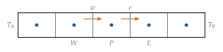
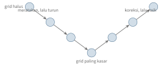
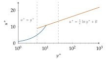

Bab 27
Dari Persamaan ke Solver
Setelah persamaan-persamaan atur, kuliah metode numerik fluida bergerak ke cara menyelesaikannya: metode volume hingga, kopling tekanan dan kecepatan, turbulensi dalam tiga pertemuan, perpindahan panas dan spesies, aliran multifase, dan satu pertemuan khusus tentang recurrence CFD. Bab ini merangkum semuanya kecuali yang terakhir, yang mendapat babnya sendiri di Bab 33.
Metode volume hingga
Metode volume hingga membagi domain menjadi sel-sel kecil dan menegakkan neraca Persamaan (26.6) untuk setiap sel. Mengintegrasikan persamaan atas volume sebuah sel, lalu memakai teorema divergensi Gauss, mengubah integral divergensi menjadi jumlah fluks yang melewati sisi-sisi sel: \[\frac{\,\mathrm{d}}{\,\mathrm{d}t}\int_V\rho\phi\,\mathrm{d}V+\sum_{\text{sisi }f}\big(\rho\boldsymbol{u}\phi-\Gamma\nabla\phi\big)_f\cdot\boldsymbol n_fA_f=\int_VS_\phi\,\mathrm{d}V.\] Keindahan bentuk ini adalah sifat konservatifnya. Fluks yang keluar dari satu sel lewat sebuah sisi adalah persis fluks yang masuk ke sel tetangganya lewat sisi yang sama, sehingga tidak ada massa, momentum, atau energi yang hilang atau muncul di dalam domain kecuali lewat batas dan sumber. Di Bab 13 kita melihat bahwa bentuk ini adalah message passing: setiap sel mengumpulkan “pesan” fluks dari tetangganya.
Cara kerjanya paling mudah dilihat pada contoh yang bisa dihitung dengan tangan. Ambil batang sepanjang setengah meter yang dibagi lima sel sama panjang, \(\Delta x=0{,}1\) m, dengan temperatur \(100\) di ujung kiri dan \(500\) di ujung kanan, tanpa aliran dan tanpa sumber (Gambar 27.1). Untuk sel dalam \(P\) dengan tetangga barat \(W\) dan timur \(E\), fluks difusi lewat sisi timur adalah \(\Gamma A(T_E-T_P)/\Delta x\) dan lewat sisi barat \(\Gamma A(T_P-T_W)/\Delta x\). Neraca keadaan tunak menyamakan keduanya, sehingga dengan \(D=\Gamma A/\Delta x\), \[2D\,T_P=D\,T_W+D\,T_E .\] Untuk sel pertama, batasnya hanya setengah sel jauhnya, sehingga fluks di sisi barat menjadi \(2D(T_P-T_A)\), dan persamaannya \(3T_1=T_2+2T_A\). Sel terakhir mendapat bentuk yang sama dengan \(T_B\). Kelima persamaan ini membentuk sistem tridiagonal, karena setiap sel hanya bicara dengan dua tetangganya, dan bisa diselesaikan dalam satu sapuan maju dan satu sapuan mundur dengan algoritme Thomas (TDMA) yang dibahas di kuliah. Hasilnya \(140\), \(220\), \(300\), \(380\), dan \(460\). Memeriksa sel pertama: \(3\cdot140=420=220+200\). Profilnya linear, persis seperti solusi eksak untuk konduksi tunak tanpa sumber.

Nilai di sisi sel harus diperkirakan dari nilai di pusat sel. Untuk suku difusi, beda pusat seperti di atas bekerja baik. Untuk suku konveksi, pilihannya lebih rumit. Tambahkan aliran dengan fluks massa \(F=\rho uA\) ke contoh tadi. Dengan beda pusat, nilai di sisi timur diambil sebagai rata-rata, \(\phi_e=(\phi_P+\phi_E)/2\), dan setelah semua suku dikumpulkan, persamaan sel berbentuk \(a_P\phi_P=a_W\phi_W+a_E\phi_E\) dengan \[a_W=D+\frac F2,\qquad a_E=D-\frac F2 .\] Kalau \(F/D\), yaitu bilangan Péclet sel \(\mathrm{Pe}=\rho u\Delta x/\Gamma\), lebih besar dari dua, koefisien \(a_E\) menjadi negatif. Artinya, menaikkan nilai di hilir justru menurunkan nilai di sel ini, sesuatu yang tidak pernah terjadi secara fisis, dan solusinya mulai berosilasi. Beda pusat akurat orde dua, tetapi hanya bisa dipakai kalau grid cukup halus untuk menjaga Pe di bawah dua.
Skema upwind mengambil nilai sisi dari sel di hulu aliran: untuk aliran ke kanan, \(\phi_e=\phi_P\). Koefisiennya menjadi \(a_W=D+F\) dan \(a_E=D\), selalu positif, sehingga tidak ada osilasi. Harganya adalah akurasi. Uraian Taylor menunjukkan apa yang hilang: nilai sebenarnya di sisi adalah \(\phi_e=\phi_P+\tfrac{\Delta x}{2}\partial\phi/\partial x+\dots\), sehingga upwind membuang suku \(\rho u\tfrac{\Delta x}{2}\partial\phi/\partial x\) dari fluks. Suku yang dibuang berbentuk persis seperti fluks difusi dengan koefisien \[\Gamma_{\mathrm{num}}=\frac{\rho u\Delta x}{2}.\] Skema ini diam-diam menambahkan difusi. Untuk air yang mengalir satu meter per detik di grid satu sentimeter, viskositas kinematik semunya \(u\Delta x/2=0{,}005\ \mathrm{m^2/s}\), lima ribu kali viskositas air yang sebenarnya. Gejala ini disebut numerical diffusion atau false diffusion, dan ia meratakan setiap gradien tajam. Skema orde lebih tinggi seperti second-order upwind dan QUICK, serta skema dengan limiter, mencari jalan tengah: akurat di daerah yang mulus, dan kembali ke perilaku upwind di dekat lompatan agar tidak berosilasi. Kuliah memperlihatkan contohnya pada perambatan gelombang permukaan, di mana antarmuka air dan udara mengabur dengan skema orde satu dan tetap tajam dengan skema yang lebih baik.
Untuk waktu, metode eksplisit menghitung keadaan baru langsung dari keadaan lama. Untuk konveksi murni dengan upwind, langkah eksplisitnya \[\phi_i^{n+1}=(1-C)\,\phi_i^n+C\,\phi_{i-1}^n,\qquad C=\frac{u\,\Delta t}{\Delta x}.\] Kalau \(0\le C\le1\), nilai baru adalah rata-rata berbobot dua nilai lama, sehingga tidak mungkin melampaui nilai terbesar atau jatuh di bawah nilai terkecil yang sudah ada. Kalau \(C>1\), bobot \(1-C\) menjadi negatif, dan galat kecil diperbesar di setiap langkah sampai simulasi meledak. Inilah syarat Courant–Friedrichs–Lewy (Courant, Friedrichs, dan Lewy 1928), \(\mathrm{CFL}=u\Delta t/\Delta x\le C_{\max}\), yang secara intuitif berarti informasi tidak boleh melompati lebih dari sekitar satu sel dalam satu langkah. Dengan \(u=1\) m/s dan \(\Delta x=1\) cm, langkah waktu eksplisit paling besar sepersekian ratus detik. Metode implisit menghitung fluks dengan nilai di langkah baru, sehingga harus menyelesaikan sistem persamaan untuk seluruh grid di setiap langkah. Mahal per langkah, tetapi stabil untuk langkah yang jauh lebih besar. Stabil belum berarti akurat: langkah waktu yang besar tetap melewatkan dinamika yang lebih cepat dari langkah itu.
Tekanan dan kecepatan
Untuk aliran tak termampatkan, tekanan tidak punya persamaannya sendiri. Ia harus diatur sedemikian rupa sehingga medan kecepatan yang dihasilkan persamaan momentum memenuhi kekekalan massa. Algoritme SIMPLE (S. V. Patankar dan Spalding 1972; Suhas V. Patankar 1980), yang dibahas langkah demi langkah di kuliah, menyelesaikan masalah ini secara iteratif. Pertama, tebak medan tekanan dan selesaikan persamaan momentum untuk mendapat kecepatan sementara. Kecepatan ini umumnya belum memenuhi kekekalan massa. Kedua, tulis hubungan antara koreksi kecepatan dan koreksi tekanan. Ketiga, masukkan hubungan itu ke persamaan kekekalan massa, sehingga diperoleh persamaan untuk koreksi tekanan. Selesaikan, perbarui tekanan dan kecepatan, lalu ulangi sampai konvergen. Pendekatan yang menyelesaikan persamaan-persamaan ini bergantian disebut segregated solver, sedangkan solver coupled menyelesaikannya bersama dalam satu sistem besar.
Langkah kedua adalah inti algoritmenya. Persamaan momentum diskret untuk sebuah sel berbentuk \(a_Pu_P=\sum a_{nb}u_{nb}+A\,\Delta p+b\), dengan \(\Delta p\) beda tekanan di kedua sisi sel. Kalau tekanan dikoreksi dengan \(p'\) dan kecepatan dengan \(u'\), SIMPLE mengabaikan sumbangan koreksi kecepatan tetangga, sehingga yang tersisa adalah hubungan sederhana \(u'_P=d_P\,\Delta p'\) dengan \(d_P=A/a_P\). Penyederhanaan inilah yang membuat metodenya bekerja dan sekaligus membuatnya lambat: koreksi tekanan yang dihitung cenderung terlalu besar. Karena itu tekanan baru hanya diambil sebagian, \(p=p^*+\alpha_pp'\), dengan faktor under-relaxation \(\alpha_p\) yang sering sekitar \(0{,}3\). Varian seperti SIMPLEC dan PISO memperbaiki penyederhanaan itu sehingga butuh lebih sedikit relaksasi.
Kuliah menekankan perbedaan antara konvergensi numerik dan konvergensi fisis. Residu yang turun beberapa orde menunjukkan bahwa sistem persamaan diskret sudah terselesaikan. Itu belum berarti besaran yang kita pedulikan, misalnya gaya hambat atau temperatur di sebuah titik, sudah tidak berubah lagi, apalagi bahwa hasilnya benar secara fisis. Memantau besaran fisis dan menguji kebebasan hasil terhadap ukuran grid adalah bagian wajib setiap simulasi.
Menyelesaikan sistem linear yang besar
Setiap langkah implisit dan setiap koreksi tekanan di SIMPLE berujung pada sistem linear \(\boldsymbol{A}\boldsymbol\phi=\boldsymbol b\) dengan jutaan baris. Matriksnya jarang, karena setiap sel hanya bicara dengan tetangganya, sehingga eliminasi Gauss yang mengisi matriks dengan nol-nol yang berubah menjadi bukan nol tidak praktis. Kuliah membahas metode iteratif.
Metode Jacobi menyelesaikan persamaan setiap sel untuk nilai sel itu sendiri, dengan nilai tetangga dari iterasi sebelumnya: \(\phi_P^{(k+1)}=\big(a_W\phi_W^{(k)}+a_E\phi_E^{(k)}+b_P\big)/a_P\). Gauss–Seidel memakai nilai tetangga yang baru saja diperbarui di iterasi yang sama, sehingga informasi menyebar lebih cepat. Ambil sistem kecil \(4\phi_1-\phi_2=3\) dan \(-\phi_1+4\phi_2=3\), yang solusinya \(\phi_1=\phi_2=1\). Mulai dari nol, Jacobi memberi \((0{,}75;\ 0{,}75)\), lalu \((0{,}9375;\ 0{,}9375)\), lalu \((0{,}984;\ 0{,}984)\): galatnya menyusut empat kali per iterasi. Gauss–Seidel memberi \(\phi_1=0{,}75\), lalu langsung memakainya untuk \(\phi_2=(3+0{,}75)/4=0{,}9375\), dan pada iterasi kedua sudah \((0{,}984;\ 0{,}996)\): galatnya menyusut enam belas kali per iterasi.
Laju susut itu adalah jari-jari spektral matriks iterasi, nilai eigen terbesarnya dalam nilai mutlak. Untuk contoh di atas nilainya \(1/4\) untuk Jacobi dan \(1/16\) untuk Gauss–Seidel. Masalahnya, untuk persamaan Poisson di grid halus, jari-jari spektral itu mendekati satu, dan semakin halus grid, semakin dekat. Analisis Fourier seperti di Bab 28 menunjukkan sebabnya: iterasi lokal meredam galat berfrekuensi tinggi dengan cepat, tetapi galat yang halus, yang merentang banyak sel, hampir tidak berkurang, karena setiap sel hanya melihat tetangganya dan informasi merambat satu sel per iterasi.
Multigrid memanfaatkan kelemahan itu. Setelah beberapa iterasi meratakan galat frekuensi tinggi, sisa galat yang halus dipindahkan ke grid yang lebih kasar. Di sana, galat yang tadinya halus menjadi relatif lebih bergelombang terhadap ukuran sel, sehingga kembali mudah diredam. Proses ini diulang turun sampai grid kasar, lalu koreksinya dibawa naik kembali (Gambar 27.2). Dengan siklus seperti ini, biaya menyelesaikan sistem menjadi sebanding dengan jumlah sel, batas terbaik yang mungkin. Ide piramida yang sama muncul di visi komputer dan di U-Net (Bab 11). Keluarga lain, metode Krylov seperti conjugate gradient untuk matriks simetris dan GMRES untuk yang tidak simetris, mencari solusi terbaik di ruang yang direntang \(\boldsymbol b,\boldsymbol{A}\boldsymbol b,\boldsymbol{A}^2\boldsymbol b,\dots\), dan dalam praktik digabung dengan multigrid sebagai prakondisi.

Turbulensi
Rata-rata Reynolds
Aliran turbulen penuh dengan fluktuasi acak di semua skala. Untuk teknik, biasanya cukup mengetahui rata-ratanya. Dekomposisi Reynolds menulis setiap besaran sebagai rata-rata ditambah fluktuasi, \(\boldsymbol{u}=\bar{\boldsymbol{u}}+\boldsymbol{u}'\). Ketika dekomposisi ini dimasukkan ke persamaan Navier–Stokes dan dirata-ratakan, hampir semuanya rapi kecuali satu suku baru dari nonlinearitas, yaitu Reynolds stress \(-\rho\,\overline{u_i'u_j'}\). Suku ini tidak diketahui dari besaran rata-rata, sehingga persamaannya tidak tertutup. Inilah closure problem turbulensi.
Boussinesq mengusulkan agar Reynolds stress diperlakukan seperti tegangan kental, dengan sebuah viskositas turbulen \(\mu_t\) yang jauh lebih besar dari viskositas molekuler. Masalahnya bergeser menjadi menentukan \(\mu_t\). Model \(k\)-\(\varepsilon\) (Launder dan Spalding 1974) menyelesaikan dua persamaan transport tambahan, untuk energi kinetik turbulen \(k\) dan laju disipasinya \(\varepsilon\), lalu menulis \(\mu_t=\rho C_\mu k^2/\varepsilon\). Konstanta-konstantanya ditetapkan dari aliran sederhana yang dipahami dengan baik, seperti peluruhan turbulensi di belakang grid dan penyebaran jet. Model \(k\)-\(\omega\) SST (Menter 1994) memakai formulasi \(k\)-\(\omega\) di dekat dinding dan beralih ke \(k\)-\(\varepsilon\) di aliran bebas, dan menjadi salah satu model paling banyak dipakai di industri. Ketika anisotropi turbulensi penting, seperti di dalam siklon gas atau pusaran ujung sayap, model Reynolds stress menyelesaikan persamaan transport untuk setiap komponen tegangan.
Di dekat dinding
Lapisan batas turbulen punya struktur berlapis yang hampir universal (Gambar 27.3). Jarak dan kecepatan dinyatakan dalam satuan dinding: kecepatan gesek \(u_\tau=\sqrt{\tau_w/\rho}\) dari tegangan dinding \(\tau_w\), jarak tak berdimensi \(y^+=yu_\tau/\nu\), dan kecepatan tak berdimensi \(u^+=u/u_\tau\). Sangat dekat dengan dinding, di bawah \(y^+\) sekitar lima, gesekan kental mendominasi dan \(u^+=y^+\). Lebih jauh, kira-kira dari \(y^+=30\), berlaku hukum logaritmik \[u^+=\frac1\kappa\ln y^++B,\] dengan konstanta von Kármán \(\kappa\approx0{,}41\) dan \(B\approx5\). Di antaranya ada lapisan penyangga. Untuk air dengan \(u_\tau=5\) cm/s, \(y^+=1\) berarti hanya \(\nu/u_\tau=20\) mikrometer dari dinding. Menyelesaikan lapisan setipis ini dengan grid mahal, sehingga banyak simulasi memakai wall function: sel pertama sengaja diletakkan di daerah logaritmik, dan hukum di atas dipakai untuk menghitung tegangan dinding tanpa menyelesaikan lapisan di bawahnya. Kuliah menekankan bahwa wall function hanya sah kalau \(y^+\) sel pertama memang berada di rentang itu, sehingga memeriksa \(y^+\) adalah bagian dari memeriksa grid.

Large eddy simulation
Large eddy simulation (LES) menyelesaikan pusaran besar secara langsung dan hanya memodelkan pusaran yang lebih kecil dari ukuran grid. Model Smagorinsky (SMAGORINSKY 1963) memberi viskositas sub-grid \(\mu_{\mathrm{SGS}}=\rho(C_s\Delta)^2|\bar{\boldsymbol S}|\), sebanding dengan kuadrat ukuran grid dan laju deformasi yang terselesaikan. LES jauh lebih mahal dari RANS karena harus berjalan dalam waktu dengan grid halus, tetapi jauh lebih murah dari DNS, dan ia menangkap struktur aliran tak tunak yang hilang dalam rata-rata.
Panas, spesies, dan reaksi
Dalam aliran turbulen, panas dan zat terlarut juga diaduk oleh pusaran. Konduktivitas efektif menjadi jumlah konduktivitas molekuler dan sumbangan turbulen, \(\lambda_{\mathrm{eff}}=\lambda+\mu_tc_p/\mathrm{Pr}_t\), dengan bilangan Prandtl turbulen biasanya sekitar 0,85. Radiasi menambah suku sumber dalam persamaan energi, dan reaksi kimia menambah suku sumber dalam persamaan spesies dan energi sekaligus. Kuliah menyinggung contoh-contoh industri, dari nosel Laval sampai pemanasan logam cair, untuk menunjukkan bahwa sebagian besar kerja pemodelan ada pada suku-suku sumber ini, bukan pada solvernya.
Aliran multifase
Banyak aliran industri melibatkan lebih dari satu fase: gelembung gas di dalam cairan, butiran di dalam gas, tetesan di dalam udara. Kuliah membahas beberapa keluarga pendekatan.
Metode volume of fluid (Hirt dan Nichols 1981) melacak antarmuka antara dua fluida yang tidak bercampur dengan sebuah fraksi volume \(\alpha\) yang bernilai satu di satu fase dan nol di fase lain. Fraksi itu hanya dibawa aliran, \(\partial\alpha/\partial t+\nabla\cdot(\alpha\boldsymbol{u})=0\), sehingga persoalan numeriknya adalah menjaga lompatan tajam dari nol ke satu tetap tajam, persis masalah numerical diffusion di atas. Kuliah membahas skema donor–akseptor dan rekonstruksi geometris antarmuka untuk keperluan ini. Massa jenis dan viskositas dirata-ratakan menurut fraksi itu, dan tegangan permukaan masuk lewat lompatan tekanan Young–Laplace di antarmuka, \(\Delta p=\sigma\kappa\), dengan \(\kappa\) kelengkungan antarmuka. Contohnya di kuliah termasuk gelombang di tangki yang bergoyang dan aliran kapiler di saluran mikro.
Untuk partikel atau tetesan yang tersebar, pendekatan Euler–Lagrange melacak setiap partikel, atau sekelompok partikel yang mewakilinya, dalam kerangka Lagrange, sementara fase kontinu diselesaikan di grid. Kopling bisa satu arah, ketika partikel hanya dibawa aliran, atau dua arah, ketika partikel juga memberi gaya balik ke fluida. Seberapa setia partikel mengikuti aliran ditentukan bilangan Stokes, perbandingan waktu respons partikel \(\tau_p=\rho_pd^2/(18\mu)\) dengan waktu khas aliran \(L/U\). Waktu respons ini turun dari hambatan Stokes pada bola kecil, \(3\pi\mu d\) kali selisih kecepatan, dibagi massa bola. Tetesan air berdiameter 10 mikrometer di udara punya \(\tau_p\approx0{,}3\) milidetik. Dalam aliran satu meter per detik melewati benda satu sentimeter, bilangan Stokesnya sekitar \(0{,}03\), dan tetesan itu berbelok bersama udara. Tetesan seratus mikrometer punya \(\tau_p\) seratus kali lebih besar, bilangan Stokes sekitar tiga, dan tetesan itu menabrak benda alih-alih berbelok. Perbedaan ini menentukan, misalnya, apakah sebuah filter menangkap partikel atau tidak. Untuk aliran butiran padat, metode elemen diskret (Cundall dan Strack 1979) menyelesaikan gerak setiap butir dan tumbukannya, dan gabungannya dengan CFD dipakai untuk unggun terfluidisasi dan pengangkutan pneumatik. Ketika partikel terlalu banyak untuk dilacak satu per satu, model dua fluida memperlakukan kedua fase sebagai kontinum yang saling menembus, digandeng oleh fraksi volume dan pertukaran momentum.
Di mana machine learning masuk
Bab ini memperlihatkan tiga titik lemah simulasi aliran. Model penutup, seperti viskositas turbulen dan model sub-grid, dibangun dari asumsi yang sering tidak berlaku. Simulasi yang cukup teliti mahal sekali. Dan setiap kasus baru, dengan geometri atau syarat batas berbeda, harus disimulasikan dari awal. Machine learning masuk lewat ketiga pintu itu: model penutup yang dipelajari dari data simulasi teliti (Bab 32), model pengganti yang menggantikan solver (Bab 29 dan Bab 30), dan metode yang memanfaatkan pola berulang agar simulasi panjang bisa diekstrapolasi dengan murah (Bab 33).
Perkembangan riset
Gerakan differentiable physics membawa solver CFD ke kerangka yang sama dengan jaringan saraf. JAX-Fluids (Bezgin, Buhendwa, dan Adams 2022) adalah solver untuk aliran termampatkan dua fase yang seluruhnya ditulis dalam JAX, sehingga bisa diturunkan secara otomatis dari keluaran sampai ke parameter dan syarat awal. Komponen machine learning, misalnya skema rekonstruksi fluks yang dipelajari, bisa dimasukkan ke dalam solver dan dioptimasi ujung ke ujung, persis gagasan solver-in-the-loop di Bab 32. Solver yang bisa diturunkan juga berguna tanpa machine learning: gradien hasil simulasi terhadap parameter desain memungkinkan optimasi bentuk dan kalibrasi model dengan cara yang sama seperti melatih jaringan.
Catatan sumber.
Bab ini mengikuti kuliah Numerical Methods in Fluid Mechanics bagian volume hingga, kopling tekanan dan kecepatan, turbulensi, panas dan spesies, serta multifase. Bacaan pendamping: Versteeg dan Malalasekera (2007), Ferziger, Perić, dan Street (2020), Suhas V. Patankar (1980), dan Pope (2000).